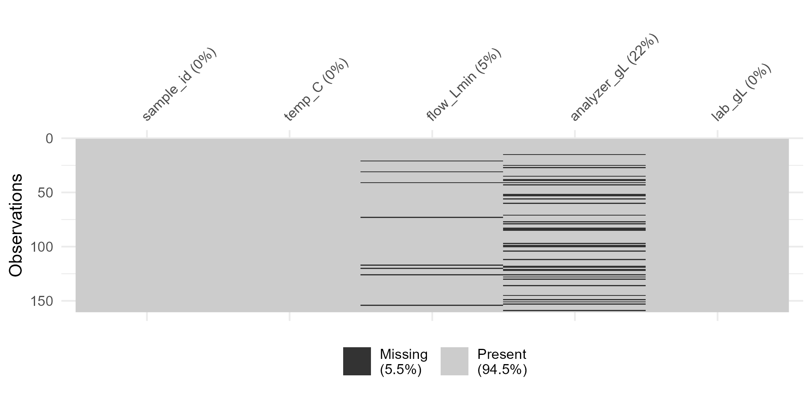
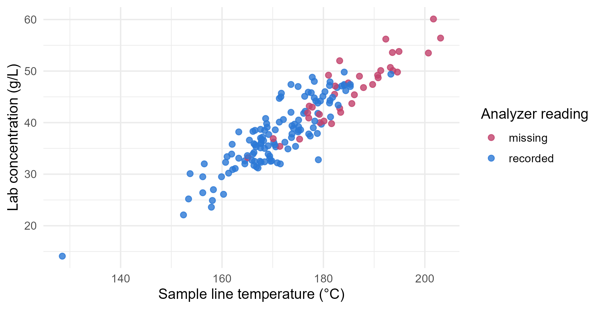
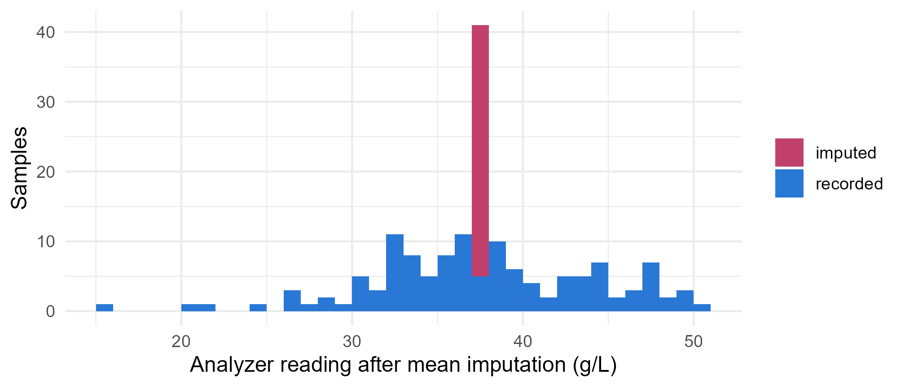

Module 1 · Lesson 12 of 14 Week 27 of 160 About 5–7 hours
Missing data I: patterns and mechanisms
How much is missing, why, and what deleting or filling in does to your results
Measure and visualize missing data with naniar, understand the three missingness mechanisms (MCAR, MAR and MNAR), and see how deleting incomplete cases and single imputation can bias results.
Every real dataset has holes. A sensor drops out, a sample gets lost, a survey question is skipped. You’ve been handling NAs since Module 0, mostly with na.rm = TRUE. This lesson asks the questions that come first: how much is missing, why is it missing, and what does ignoring it do to your answers?
Our case study is the plant’s online analyzer, which measures the product’s concentration in the sample line, in g/L. For a study, the lab also measured all 160 samples by hand, and the analyzer missed 36 of them. That’s a rare luxury: normally you never learn what the missing values were. Here, the lab’s results let us check every method against the truth.
Missing values are like the dog that didn’t bark: sometimes the most important clue is what isn’t there, and why. Time to investigate some silence!
In this lesson you’ll:
- measure and visualize missing data with naniar
- understand the three missingness mechanisms: MCAR, MAR and MNAR
- look for patterns that hint at why values are missing
- see what deleting incomplete cases does to your results
- learn why filling in a single guess (mean imputation, and others) can mislead
How much is missing?
analyzer <- read_csv("data/analyzer_study.csv", show_col_types = FALSE)
head(analyzer)
#> # A tibble: 6 × 5
#> sample_id temp_C flow_Lmin analyzer_gL lab_gL
#> <chr> <dbl> <dbl> <dbl> <dbl>
#> 1 S001 175. 11.6 38.3 39.2
#> 2 S002 168. 12.9 36.6 36.5
#> 3 S003 179 13.9 34 32.8
#> 4 S004 168. 9.65 39.9 38.7
#> 5 S005 177 10.5 46.2 45.9
#> 6 S006 168. 11.3 36.9 36.1Each row is a sample: its temperature in the sample line, the flow rate, the analyzer’s reading and the lab’s. A quick count of the NAs in each column:
colSums(is.na(analyzer))
#> sample_id temp_C flow_Lmin analyzer_gL lab_gL
#> 0 0 8 36 0The naniar package is built for exploring missing data. miss_var_summary() gives the count and percentage for each variable, and vis_miss() draws the whole table, with every missing cell in black:
library(naniar)
miss_var_summary(analyzer)
#> # A tibble: 5 × 3
#> variable n_miss pct_miss
#> <chr> <int> <num>
#> 1 analyzer_gL 36 22.5
#> 2 flow_Lmin 8 5
#> 3 sample_id 0 0
#> 4 temp_C 0 0
#> 5 lab_gL 0 0
vis_miss(analyzer)
The analyzer is missing 22.5% of its readings, and the flowmeter 5%. The other columns are complete. You can also count by row: miss_case_table() shows how many samples have no gaps, one gap or two.
miss_case_table(analyzer)
#> # A tibble: 3 × 3
#> n_miss_in_case n_cases pct_cases
#> <int> <int> <dbl>
#> 1 0 118 73.8
#> 2 1 40 25
#> 3 2 2 1.25Your turn. How many samples are complete, with no missing value in any column? Base R’s complete.cases() gives TRUE for each complete row.
complete.cases(analyzer) is TRUE for every row with no NA. sum() counts the TRUEs.
sum(complete.cases(analyzer))118 of the 160 samples are complete. Notice that 36 + 8 = 44 missing values only cost 42 rows, because two samples are missing both.
Why is it missing?
The reason a value is missing matters more than how many are missing. Statisticians describe three missingness mechanisms:
| Mechanism | Whether a value is missing depends on… | Plant example |
|---|---|---|
| MCAR, missing completely at random | nothing at all | the flowmeter’s logger skips a reading now and then, at random |
| MAR, missing at random | other variables that were recorded | the analyzer drops out when the sample line is hot, and the temperature is recorded |
| MNAR, missing not at random | the missing value itself | the water titrator fails on very wet samples, so the wettest results are the ones missing |
The names are confusing, everybody agrees! “Missing at random” doesn’t mean that the values are missing randomly. It means that once you take the recorded variables into account, what’s left is random.
Why does this matter? Because each mechanism does different damage:
- Under MCAR, the complete cases are a random sample of all cases. Analyzing only them is unbiased, just less precise.
- Under MAR, the complete cases can be a biased sample. But the recorded variables hold the information needed to correct for it.
- Under MNAR, the information needed to correct the bias is in the missing values themselves. No method can fix that from the data alone, and you have to make assumptions about the missing values.
One more thing to know: data can show you that values are not MCAR, but it can never prove whether they’re MAR or MNAR, because the evidence is exactly what’s missing. That part takes knowledge of the process: how the instrument works, why people skip questions, and so on.
Looking for patterns
The first clue is to compare the samples with and without an analyzer reading. Here’s that comparison, using is.na() to make a group:
analyzer |>
group_by(analyzer_missing = is.na(analyzer_gL)) |>
summarise(n = n(), mean_temp = mean(temp_C), mean_lab = mean(lab_gL))
#> # A tibble: 2 × 4
#> analyzer_missing n mean_temp mean_lab
#> <lgl> <int> <dbl> <dbl>
#> 1 FALSE 124 171. 37.6
#> 2 TRUE 36 185. 46.2The samples without a reading were about 14 °C hotter, and their lab concentrations were much higher. A picture makes the pattern plain. Here’s the lab’s concentration against temperature, with the samples that the analyzer missed in rose:
analyzer |>
mutate(analyzer = if_else(is.na(analyzer_gL), "missing", "recorded")) |>
ggplot(aes(x = temp_C, y = lab_gL, color = analyzer)) +
geom_point(size = 2, alpha = 0.8) +
scale_color_manual(values = c(missing = "#C2416C", recorded = "#2a78d6")) +
labs(x = "Sample line temperature (°C)", y = "Lab concentration (g/L)", color = "Analyzer reading") +
theme_minimal(base_size = 12)
The missing readings cluster in the hot, concentrated corner. The values are clearly not MCAR, and naniar’s mcar_test() (Little’s test) agrees, with a tiny p-value:
mcar_test(select(analyzer, -sample_id))
#> # A tibble: 1 × 4
#> statistic df p.value missing.patterns
#> <dbl> <dbl> <dbl> <int>
#> 1 53.7 8 0.00000000789 4What about MAR versus MNAR? The analyzer’s manual explains why readings go missing: when the sample line runs hot, the analyzer can’t hold the sample at its measuring temperature, so it skips the reading, and the hotter the line, the more often that happens. So whether a reading is missing depends on the temperature, which is recorded. That’s MAR. (Without the manual, an analyzer that failed at high concentrations, which is MNAR, would look almost the same in this plot. That’s why process knowledge matters.)
Your turn. Split the temperatures into bands, and compute the percentage of missing analyzer readings in each band.
The mean of a logical vector is the proportion of TRUEs. So mean(is.na(analyzer_gL)) is the share of missing readings.
analyzer |>
mutate(band = cut(temp_C, breaks = c(-Inf, 165, 175, 185, Inf))) |>
group_by(band) |>
summarise(n = n(), pct_missing = round(100 * mean(is.na(analyzer_gL))))From none at all below 165 °C, to 85% above 185 °C. The hotter the line, the likelier the dropout.
What deleting does
The simplest way to handle missing values is to leave out every incomplete case. That’s called complete-case analysis (or listwise deletion), and it’s what na.rm = TRUE does, and what lm() does without even asking. Is it safe here?
Your turn. Compare the mean of the analyzer’s readings, ignoring the missing ones, with the mean of the lab’s results for all 160 samples.
na.rm = TRUE leaves out the missing readings.
analyzer |>
summarise(analyzer_mean = mean(analyzer_gL, na.rm = TRUE),
lab_mean = mean(lab_gL))37.6 g/L against 39.6 g/L. The analyzer’s mean is 2 g/L too low, not because the analyzer reads low, but because it missed the hottest, most concentrated samples.
Is the analyzer just reading low? No. On the samples it did measure, it agrees with the lab almost perfectly (the correlation is 0.99), and the lab’s mean for those same samples is 37.6 g/L too. The complete cases are simply a cooler, more dilute subset of the samples.
Here’s a surprise, though. Complete-case analysis biased the mean, but a regression of concentration on temperature is still fine:
coef(lm(analyzer_gL ~ temp_C, data = analyzer)) # complete cases only
#> (Intercept) temp_C
#> -74.1561141 0.6540077
coef(lm(lab_gL ~ temp_C, data = analyzer)) # all 160 samples
#> (Intercept) temp_C
#> -70.557380 0.632524Both slopes are about 0.63 to 0.65 g/L per °C. When values are missing because of a predictor, and that predictor is in the model, the complete cases still show the right relationship. They just can’t give the right overall mean, because the hot samples are under-represented. Whether deleting is safe depends on the mechanism and on the question you’re asking.
Notice too that lm() deleted the incomplete rows silently. nobs() tells you how many rows a model really used:
nobs(lm(analyzer_gL ~ temp_C + flow_Lmin, data = analyzer))
#> [1] 118118 of 160. Always check this number, especially when a model has many variables, because each one’s missing values remove more rows.
Filling in: single imputation
Instead of deleting, you could impute, which means filling in each missing value with a guess. Here are the common single guesses, and what they do.
Mean imputation replaces every NA with the mean of the observed values. It keeps all the rows, but it leaves the mean exactly as biased as before, and it squeezes the spread. Every filled-in value sits at the same point, like a spike in the middle of a histogram:
analyzer |>
mutate(filled = coalesce(analyzer_gL, mean(analyzer_gL, na.rm = TRUE)),
source = if_else(is.na(analyzer_gL), "imputed", "recorded")) |>
ggplot(aes(x = filled, fill = source)) +
geom_histogram(binwidth = 1, boundary = 0) +
scale_fill_manual(values = c(imputed = "#C2416C", recorded = "#2a78d6")) +
labs(x = "Analyzer reading after mean imputation (g/L)", y = "Samples", fill = NULL) +
theme_minimal(base_size = 12)
Regression imputation predicts each missing value from the variables you do have, here the temperature. That uses the MAR information, so it fixes the mean. But every imputed value sits exactly on the regression line, with none of the natural scatter around it. That makes relationships look stronger and more certain than they really are.
Stochastic regression imputation adds random noise, the size of the regression’s residuals, to each prediction. That restores the scatter. You’ll try it in the challenge round.
Carrying the last value forward (LOCF) is common for time series. tidyr::fill() does it. Remember the R2 thermocouple’s three-reading dropout in the sensor log?
sensor <- read_csv("data/sensor_log.csv", show_col_types = FALSE)
sensor[199:205, c("timestamp", "R2_temp_C")] |> fill(R2_temp_C)
#> # A tibble: 7 × 2
#> timestamp R2_temp_C
#> <dttm> <dbl>
#> 1 2026-03-10 16:30:00 27
#> 2 2026-03-10 16:35:00 27.1
#> 3 2026-03-10 16:40:00 27.1
#> 4 2026-03-10 16:45:00 27.1
#> 5 2026-03-10 16:50:00 27.1
#> 6 2026-03-10 16:55:00 27.1
#> 7 2026-03-10 17:00:00 27.9That’s reasonable while the reactor sits idle at 27 °C. During a heat-up, at 6 °C a minute, it would be badly wrong.
And zero? In Lesson 4, the running total of alarms broke at batch B31, whose alarm log was lost, and you asked whether coalesce(alarms, 0) was a fair guess. Now you can answer: no, not really. The log was lost, not empty, and the other batches averaged about 1.3 alarms each, so zero quietly biases the total down. Every fill-in is an assumption about the missing value. Say it out loud, in your cleaning log.
The deepest problem with any single imputation is this: afterwards, the analysis treats your guesses as if they were real measurements. It doesn’t know that 36 of the values are invented, so its standard errors and p-values are too optimistic. Fixing that is the job of multiple imputation, in the next lesson.
Your turn. Fill in the missing readings with the mean, and compare the standard deviation before and after.
The value to fill in is the mean of the observed readings: mean(analyzer_gL, na.rm = TRUE).
analyzer |>
mutate(filled = coalesce(analyzer_gL, mean(analyzer_gL, na.rm = TRUE))) |>
summarise(sd_before = sd(analyzer_gL, na.rm = TRUE), sd_after = sd(filled))The standard deviation shrank from 6.6 to 5.8 g/L, because 36 values now sit exactly at the mean. The true spread, from the lab, is 7.4 g/L.
Your turn. Now try regression imputation. Fit a regression of the analyzer reading on temperature, use it to predict every sample, and fill in the gaps with the predictions. What’s the new mean?
Fill each gap with that sample’s prediction: coalesce(analyzer_gL, predicted).
fit <- lm(analyzer_gL ~ temp_C, data = analyzer)
analyzer |>
mutate(predicted = predict(fit, newdata = analyzer),
filled = coalesce(analyzer_gL, predicted)) |>
summarise(mean_filled = mean(filled))39.7 g/L, very close to the lab’s 39.6. Using the temperature, which explains why readings are missing, removed the bias.
Challenge round
Challenge 1 · Is the flowmeter MCAR? Eight flow readings are missing. Compare the samples with and without a flow reading: their number, mean temperature and mean lab concentration. Do the missing flows look special?
Group by is.na(flow_Lmin), just as you did for the analyzer readings.
group_by(flow_missing = is.na(flow_Lmin)) |>
summarise(n = n(), mean_temp = mean(temp_C), mean_lab = mean(lab_gL))analyzer |>
group_by(flow_missing = is.na(flow_Lmin)) |>
summarise(n = n(), mean_temp = mean(temp_C), mean_lab = mean(lab_gL))The 8 samples without a flow reading look like the rest: a similar temperature (172 °C against 174 °C), and a concentration well within the normal scatter. With only 8, you can’t be sure. But nothing argues against MCAR, and the logger’s documentation says that it drops readings at random. Deleting these 8 rows costs some precision, but adds no bias.
Challenge 2 · Putting the scatter back. Stochastic regression imputation adds random noise to each prediction, with the standard deviation of the regression’s residuals, sigma(fit). Fill in the gaps that way, and compare the standard deviation with the plain regression imputation’s 7.54 g/L.
The residual standard deviation of the regression is sigma(fit).
set.seed(2026)
fit <- lm(analyzer_gL ~ temp_C, data = analyzer)
analyzer |>
mutate(predicted = predict(fit, newdata = analyzer),
noisy = predicted + rnorm(n(), mean = 0, sd = sigma(fit)),
filled = coalesce(analyzer_gL, noisy)) |>
summarise(mean_filled = mean(filled), sd_filled = sd(filled))The mean is still about 39.7 g/L, and the spread is back up, to about 7.8 g/L. But change the seed, and every imputed value changes. Which version is the “right” one? None of them, and that uncertainty is exactly what multiple imputation keeps track of.
Quick quiz
1. A data logger skips a reading now and then, for no reason related to anything in the data. What kind of missingness is that?
Nothing predicts which readings are missing, so the complete cases are a random sample.
2. The analyzer skips readings when the sample line is hot, and the line temperature is recorded. What kind of missingness is that?
Whether a value is missing depends on a variable that was recorded. That’s MAR, and the recorded temperature can be used to correct for it.
3. A water titrator fails on very wet samples, so the highest water contents are the ones missing. What kind of missingness is that?
Whether a value is missing depends on the value itself. The data can’t correct for that without extra assumptions.
4. In the analyzer study, what did leaving out the missing readings do to the mean concentration?
37.6 g/L instead of 39.6 g/L. The complete cases were a cooler, more dilute subset.
5. What does mean imputation do to the standard deviation of a variable?
In the study, the standard deviation fell from 6.6 to 5.8 g/L, even further from the true 7.4 g/L.
6. What’s the deepest problem with filling in a single guess for each missing value?
The analysis can’t tell invented values from measured ones, so its standard errors are too small. Multiple imputation fixes that.
Wrap-up
You can look at a hole in your data and ask the right questions! Here’s what you’ve learned:
- Measure it:
colSums(is.na()),complete.cases(), and naniar’smiss_var_summary(),miss_case_table()andvis_miss(). - Mechanisms: MCAR (missing for no reason), MAR (missing because of something recorded) and MNAR (missing because of the value itself). The data can rule out MCAR, but only process knowledge can separate MAR from MNAR.
- Look for patterns: compare cases with and without missing values, plot them, and try
mcar_test(). - Deleting: complete-case analysis is unbiased under MCAR. Under MAR it can bias means, while a regression that includes the cause of the missingness can still be right. Check
nobs(). - Single imputation: the mean shrinks the spread and keeps the bias, regression imputation fixes the mean but overstates relationships, LOCF suits only slow-changing series, and zero is rarely a fair guess. All of them treat guesses as data.
TipPractice in RStudio (optional, about an hour)
Download analyzer_study.csv into your project’s data-raw/ folder, and run install.packages("naniar").
- Shadow columns.
bind_shadow(analyzer)adds a column likeanalyzer_gL_NAfor each variable, saying whether its value is missing. Use it to draw the lab concentration’s distribution withgeom_density(), colored by whether the analyzer reading is missing. - naniar’s scatterplot.
geom_miss_point()draws missing values in the margins of a scatterplot, instead of dropping them. Plotanalyzer_gLagainsttemp_Cwith it. - Simulate the mechanisms. Start from the lab’s complete results. Make three copies, and delete 30% of the values in each: completely at random, more often when the temperature is high (MAR), and more often when the concentration itself is high (MNAR). Compare the complete-case means with the truth. Can you tell the MAR and MNAR copies apart from their data alone?
- Your own data. Run
miss_var_summary()andvis_miss()on any dataset you have, maybe one from Module 0. What’s missing, and can you guess why?
NoteKey words from this lesson
- Missingness mechanism
- The process that decides which values are missing.
- MCAR, missing completely at random
- Whether a value is missing has nothing to do with the data, observed or not.
- MAR, missing at random
- Whether a value is missing depends only on variables that were recorded.
- MNAR, missing not at random
- Whether a value is missing depends on the missing value itself.
- Complete-case analysis
- Analyzing only the rows with no missing values, also called listwise deletion.
- Imputation
- Filling in missing values with estimates.
- Single imputation
- Filling in one value for each gap, for example the mean, a regression prediction, or the last value carried forward.
NoteWant to read more?
- Stef van Buuren, Flexible Imputation of Missing Data, chapters 1 and 2. The standard reference, free online. Chapter 1 covers exactly this lesson’s ideas.
- R for Data Science (2e), “Missing values”. The practical side: explicit and implicit missing values,
fill()andcomplete(). - “Getting started with naniar”. A tour of naniar’s summaries and plots.